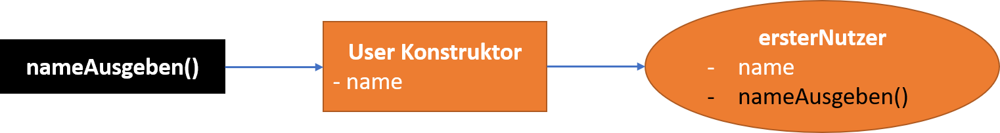

Vorlesung 6 - CSS Vererbung und JS Prototyping
 23.11.2020
23.11.2020
Wie immer starteten wir auch diese Woche mit einem Teil über HTML bzw. CSS. Diesen werde ich heute aber nur kurz zusammenfassen, da für mich persönlich nichts Neues dabei war.
CSS
Die heutigen Themen im Punkto CSS waren die Vererbung und das Definieren und Ansprechen von CSS-Klassen.
Bei ersterem ging es lediglich darum, dass HTML Elemente die ineinander geschachtelt sind ihre Eigenschaften vom nächsthöheren Element bekommen können.
So kann man einen em-Tag beispielsweise in einem p-Tag verwenden und nur dem p-Tag die Eigenschaft color: green; geben.
Für den zweiten heute besprochenen Aspekt würde ich auf meinen Eintrag zu Vorlesung 5 verweisen. Dort hatte ich dazu schon etwas geschrieben im Abschnitt Selektoren.
JavaScript
Nachdem wir das vorangegangene besprochen hatten (und es uns an einem Beispiel gezeigt wurde) ging es nun auf zum heutigen JavaScript Teil. Dazu setzten wir an dem an, wo wir
letzte Woche aufgehört hatten - bei Objekten.
Das heute behandelte Thema war das Prototyping. Grob umrissen lassen sich mit dem Prototyping nachträglich zu einem bereits vorhandenen Konstruktor weitere Methoden und Attribute hinzufügen.
Diese werden aber dann nicht nur zu anschließend erzeugten Objekten hinzugefügt, sondern auch zu bereits generierten. Eine passende Analogie aus Java ist hier die Superklasse.
So schreiben wir mit dem Prototyping eine "Superklasse", die ihre Methoden und Attribute an die dann "Subklasse" anfügt.
Das sieht dann am Ende folgendermaßen aus:
// unser Konstruktor
function User(){
this.name = "Peter",
}
// Funktion die beispielsweise durch einen Button aufegrufen wird
function methodeHinzufuegen(){
// User erstellen
var ersterNutzer = new User();
// Methode hinzufügen
User.prototype.nameAusgeben = function(){
alert("Mein Name ist " + this.name);
}
}
Wir haben also einen User Konstruktor mit dem Attribut name. Wir können also "Peters" erzeugen. Jetzt können mit mit prototype nachträglich noch die Funktion nameAusgeben hinzufügen ohne, dass wir das bereits erstellte Objekt löschen und neu erstellen müssen.
